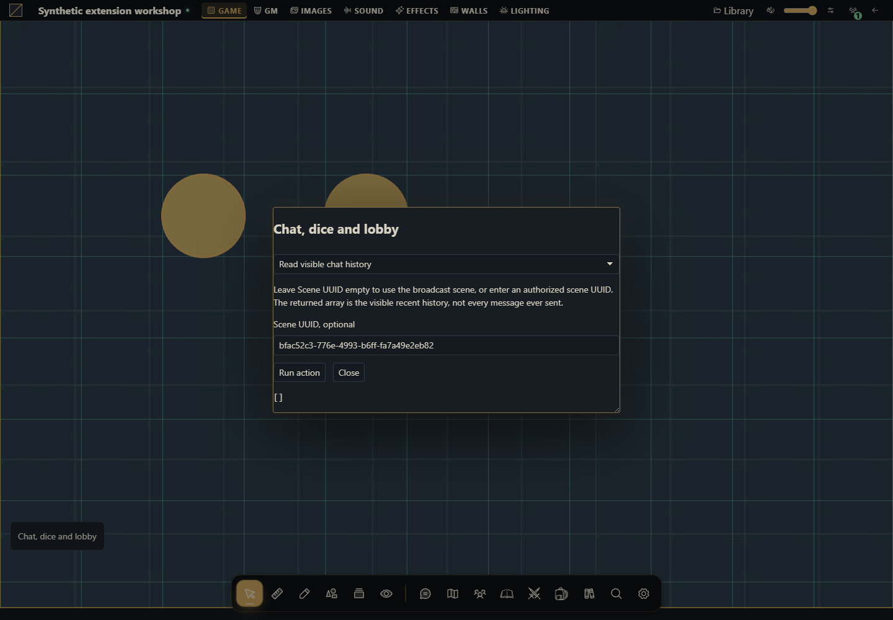

How to build chat, dice and ready-check tools
Create a working module that sends messages, publishes rolls, moderates chat, searches documents and updates readiness.


The project you will build
Build a native-modal workbench with twelve independent actions. Begin with Read history, send a public message, test whisper/GM/emote delivery, roll public and secret dice, then inspect and update the lobby. Moderation is intentionally explicit and restricted to a disposable campaign.
Target host: Gravewright 0.3.0. Actions run only when you click Run action, using the signed-in account. The demonstration panel is English. Each recipe specifies inputs and an observable result.
1. Create the files
Create a folder named chat-dice. Save the complete files below as UTF-8, or download the project. manifest.json belongs at the root. No npm dependencies or JavaScript build is required.
chat-dice/
manifest.json
main.mjs
recipes.mjs
styles.css
LICENSE.txtUse a disposable campaign with two members and one original actor. Enable native ready checks and command search through the installation settings if you want those recipes; their APIs report permission_denied when the feature is disabled. Copy a player display name from the table and document UUIDs from native lists.
2. Package, install and activate
From the project folder, run in PowerShell:
python -m json.tool manifest.json
python -m zipfile -c ../chat-dice-1.0.0.zip manifest.json main.mjs recipes.mjs styles.css LICENSE.txt
python -m zipfile -l ../chat-dice-1.0.0.zipOn Linux/macOS, replace python with python3 in the same commands. The archive listing must show manifest.json at its root. As installation owner, open Inside → Modules → Install module → Install from ZIP, select the ZIP and click Install. As GM, open the campaign, select its Gravewright button → Extensions and Activate version 1.0.0 of Chat, dice and lobby. Close that menu and click Chat, dice and lobby. See your first module for screen-by-screen instructions.
The package stays inactive until selected for the table. Test one demonstration extension at a time because their launchers share a position. For changed bytes, increment version to 1.0.1, build another ZIP, install and activate that version; do not edit installed files.
3. Run each recipe
Read visible chat history
Leave Scene UUID empty to use the broadcast scene, or enter an authorized scene UUID. The returned array is the visible recent history, not every message ever sent.
async ({api,signal},v)=>api.chat.history(v.sceneId.trim()?{sceneId:v.sceneId.trim()}:{},{signal})Expected result: Message IDs, authors, text and visibility for this account.
How to verify: Compare sender, whisper recipient and an unrelated player. Hidden messages must be absent.
Send one public message
Enter original text. This recipe rejects a leading slash so the public action cannot accidentally become a command. Optional scene selection uses sceneId.
async ({api,signal},v)=>{const text=v.text.trim();if(text.startsWith('/'))throw new Error('Use a dedicated command recipe.');return api.chat.send({text,...(v.sceneId.trim()?{sceneId:v.sceneId.trim()}:{})},{signal,requestId:crypto.randomUUID()});}Expected result: One visible chat message and its server ID.
How to verify: Check native chat as two table members. Run again only if you intend a second message.
Send a recipient-bound whisper
Enter the exact display name of a member in this campaign, including spaces. Native /w parsing resolves members, not a client-supplied audience list. Identical display names can resolve multiple matching members.
async ({api,signal},v)=>api.chat.send({text:'/w '+v.recipient.trim()+' '+v.text.trim()},{signal,requestId:crypto.randomUUID()})Expected result: The server returns a whisper visible to sender and matching recipients.
How to verify: Read history as recipient and nonrecipient; only the former receives the content. Use unique test names.
Send a message to the GMs
The /gm native command addresses campaign GMs plus the sender. It is a chat command, not a visibility field on chat.send.
async ({api,signal},v)=>api.chat.send({text:'/gm '+v.text.trim()},{signal,requestId:crypto.randomUUID()})Expected result: A recipient-filtered message in GM and sender chat.
How to verify: Open the native directory or document and compare its server state. Compare GM and player views; only authorized content may appear.
Publish an emote
Enter an action. The native /me command marks the message as an emote and retains normal public delivery.
async ({api,signal},v)=>api.chat.send({text:'/me '+v.text.trim()},{signal,requestId:crypto.randomUUID()})Expected result: A chat message with metadata.emote true.
How to verify: Open the native directory or document and compare its server state. Compare GM and player views; only authorized content may appear.
Roll and publish public or GM-only dice
Enter an expression supported by the native parser, label and repeat count. GM-only result chooses visibility gm. This action persists and publishes a roll; it is not a local calculator.
async ({api,signal},v)=>{if(!Number.isInteger(v.repeat)||v.repeat<1||v.repeat>12)throw new Error('Repeat must be 1 to 12.');return api.dice.roll(v.expression,{label:v.label,repeat:v.repeat,visibility:v.secret?'gm':'public'},{signal,requestId:crypto.randomUUID()});}Expected result: One durable submission containing the requested roll(s), with the selected audience.
How to verify: Compare public and GM-only rolls in two accounts. Reject repeat 0 or 13. A retry of the same logical submission must reuse its original UUID rather than roll again.
Moderate one message
As GM, copy the numeric ID from history. This removes that message content and attachments while preserving retry identity.
async ({api,context,signal},v)=>{if(context.role!=='gm')throw new Error('GM required.');if(!/^\d+$/.test(v.messageId))throw new Error('Use the numeric chat ID from history.');return api.chat.remove(v.messageId,{signal});}Expected result: A removed count; subsequent history omits that message.
How to verify: Moderate only a synthetic message created for this tutorial. A player must be rejected by the server.
Clear the disposable campaign chat
Use only a disposable campaign. Type CLEAR CHAT. This GM moderation operation is campaign-wide, including scenes, rather than just the history currently displayed.
async ({api,context,signal},v)=>{if(context.role!=='gm')throw new Error('GM required.');if(v.confirmation!=='CLEAR CHAT')throw new Error('Type CLEAR CHAT to clear the whole campaign chat.');return api.chat.clear({signal});}Expected result: All undeleted messages in this campaign are removed.
How to verify: Read history in another scene and confirm it is also cleared. Submission receipts remain.
Inspect the ready check and selectable actors
The installation must have its native ready check enabled. Read members, summary and the actors this account may select.
async ({api,signal})=>api.table.lobby({signal})Expected result: members, actors and summary.ready/total.
How to verify: Compare a read-only actor with an actor owned by this player; only controllable actors are selectable.
Update this member’s ready state
Set the checkbox, a selectable actor UUID from the lobby result, and assets_state. Leave actor UUID blank to clear the selection. The API chooses the current member; no user ID can impersonate someone else.
async ({api,signal},v)=>{if(!['unknown','loading','ready','error'].includes(v.assets))throw new Error('Choose a native assets_state.');if(v.actorId.trim()){const lobby=await api.table.lobby({signal});if(!lobby.actors.some(actor=>actor.id===v.actorId.trim()))throw new Error('Actor is not selectable.');}return api.table.updateLobby({is_ready:v.ready,assets_state:v.assets,selected_actor_id:v.actorId.trim()||null},{signal});}Expected result: The returned lobby has this member’s new selection and readiness.
How to verify: Use two accounts: only the current member’s row changes. Unknown actor or assets state must fail.
Search all seven document kinds
Use at least two characters. Blank kind searches all; accepted filters are actor, item, journal, quest, quest_board, scene and compendium. A result is a search projection with title, kind, snippet and actions, not a full document.
async ({api,signal},v)=>{const kind=v.kind.trim();if(!['','actor','item','journal','quest','quest_board','scene','compendium'].includes(kind))throw new Error('Unknown search kind.');return api.table.search(v.query,{...(kind?{kind}:{}),signal});}Expected result: An array of up to 20 authorized matches.
How to verify: Search the same private title as GM and player; it must be absent for the player. Test quest separately from journal.
Revalidate a recent document
Use one previously read result ID. Recent references use type journal for quests and quest boards, while search kind distinguishes those categories. Up to 12 unique references can be supplied in an array.
async ({api,signal},v)=>{if(!['actor','item','journal','scene','compendium'].includes(v.type))throw new Error('Invalid reference type.');return api.table.search('',{recent:[{id:v.id,type:v.type}],signal});}Expected result: Only references still readable by the current member are returned.
How to verify: Remove the player’s read permission, then repeat the same recent reference. It must disappear.
4. Understand and adapt the complete files
main.mjs renders the launcher and form. recipes.mjs owns behavior: change the chosen recipe’s run function while keeping its signature. The form passes real number, boolean and File values, blocks overlapping requests and renders using textContent. It does not evaluate user-provided code. api, host, assets and storage belong to the mount; signal cancels work on deactivation. The modal stays open during pending work and is released when the mount aborts. Each business function remains responsible for revisions, permissions and transaction sequencing.
manifest.json
{
"id": "tutorial.chat-dice",
"name": "Chat, dice and lobby",
"version": "1.0.0",
"sdk": {
"requires": ">=1.0.0 <2.0.0",
"tested": "1.0.0"
},
"entry": "main.mjs",
"description": "Create a working module that sends messages, publishes rolls, moderates chat, searches documents and updates readiness.",
"author": "Gravewright documentation",
"license": "MIT"
}main.mjs
import {recipes} from './recipes.mjs';
export default {
start({styles}) { styles.use('styles.css'); },
register({register}) {
register("table.interface", ({root,api,host,assets,storage,context,events,viewport,signal,onDispose}) => {
const doc=root.ownerDocument;
const button=doc.createElement('button');
button.type='button';button.className='tutorial-launcher';
button.textContent="Chat, dice and lobby";
root.append(button);
for(const type of ['pointerdown','mousedown'])button.addEventListener(type,event=>event.stopPropagation(),{signal});
let modal,pending=false;
button.addEventListener('click',event=>{
event.stopPropagation();
if(modal?.isConnected) { modal.focus();return; }
const panel=doc.createElement('section');
panel.className="tutorial-workbench-chat-dice";
panel.setAttribute('role','dialog');panel.setAttribute('aria-modal','true');
panel.setAttribute('aria-label',button.textContent);panel.tabIndex=-1;
const title=doc.createElement('h2');title.textContent=button.textContent;panel.append(title);
const choose=doc.createElement('select');choose.setAttribute('aria-label','Action');
for(const recipe of recipes) {
const option=doc.createElement('option');option.value=recipe.id;option.textContent=recipe.label;choose.append(option);
}
const form=doc.createElement('form'),fields=doc.createElement('div');
const description=doc.createElement('p');
const run=doc.createElement('button');run.type='submit';run.textContent='Run action';
const close=doc.createElement('button');close.type='button';close.textContent='Close';
const output=doc.createElement('pre');output.setAttribute('role','status');output.setAttribute('aria-live','polite');
form.append(description,fields,run,close,output);panel.append(choose,form);
function renderFields(){
const recipe=recipes.find(item=>item.id===choose.value);fields.replaceChildren();
description.textContent=recipe.description;
for(const field of recipe.fields||[]) {
const label=doc.createElement('label');label.textContent=field.label;
const input=doc.createElement('input');input.name=field.name;input.type=field.type||'text';
if(field.type==='number')input.step=String(field.step??'any');
if(field.type==='checkbox')input.checked=!!field.value;
else if(field.type!=='file')input.value=String(field.value??'');
input.required=!!field.required;
if(field.accept)input.accept=field.accept;
label.append(input);fields.append(label);
}
output.textContent='';
}
choose.addEventListener('change',renderFields,{signal});renderFields();
form.addEventListener('submit',async event=>{
event.preventDefault();if(pending)return;
const recipe=recipes.find(item=>item.id===choose.value),values={};
for(const input of fields.querySelectorAll('input')) {
values[input.name]=input.type==='file'?input.files[0]:input.type==='checkbox'?input.checked:input.type==='number'?Number(input.value):input.value;
}
pending=true;choose.disabled=true;run.disabled=true;close.disabled=true;
for(const input of fields.querySelectorAll('input'))input.disabled=true;
output.textContent='Running…';
try {
const value=await recipe.run({api,host,assets,storage,context,events,viewport,signal,onDispose},values);
if(!signal.aborted)output.textContent=typeof value==='string'?value:JSON.stringify(value??null,null,2);
} catch(error) {
if(!signal.aborted)output.textContent=String(error.code||error.message||'unavailable');
} finally {
pending=false;
if(!signal.aborted){choose.disabled=false;run.disabled=false;close.disabled=false;for(const input of fields.querySelectorAll('input'))input.disabled=false;}
}
},{signal});
close.addEventListener('click',()=>void modal.close(),{signal});
modal=api.ui.openModal(panel,{canClose:()=>!pending||signal.aborted});
},{signal});
onDispose(()=>{button.remove();if(modal)void modal.close();});
});
},
stop() {}
};recipes.mjs
export const recipes=[
{
id:"history",
label:"Read visible chat history",
description:"Leave Scene UUID empty to use the broadcast scene, or enter an authorized scene UUID. The returned array is the visible recent history, not every message ever sent.",
fields:[
{
"name": "sceneId",
"label": "Scene UUID, optional",
"type": "text",
"value": "",
"required": false
}
],
run:async ({api,signal},v)=>api.chat.history(v.sceneId.trim()?{sceneId:v.sceneId.trim()}:{},{signal})
},
{
id:"public-message",
label:"Send one public message",
description:"Enter original text. This recipe rejects a leading slash so the public action cannot accidentally become a command. Optional scene selection uses sceneId.",
fields:[
{
"name": "text",
"label": "Public message",
"type": "text",
"value": "The harbor gates are open.",
"required": true
},
{
"name": "sceneId",
"label": "Scene UUID, optional",
"type": "text",
"value": "",
"required": false
}
],
run:async ({api,signal},v)=>{const text=v.text.trim();if(text.startsWith('/'))throw new Error('Use a dedicated command recipe.');return api.chat.send({text,...(v.sceneId.trim()?{sceneId:v.sceneId.trim()}:{})},{signal,requestId:crypto.randomUUID()});}
},
{
id:"whisper",
label:"Send a recipient-bound whisper",
description:"Enter the exact display name of a member in this campaign, including spaces. Native /w parsing resolves members, not a client-supplied audience list. Identical display names can resolve multiple matching members.",
fields:[
{
"name": "recipient",
"label": "Exact member display name",
"type": "text",
"value": "",
"required": true
},
{
"name": "text",
"label": "Private message",
"type": "text",
"value": "Meet me at the lighthouse.",
"required": true
}
],
run:async ({api,signal},v)=>api.chat.send({text:'/w '+v.recipient.trim()+' '+v.text.trim()},{signal,requestId:crypto.randomUUID()})
},
{
id:"gm-message",
label:"Send a message to the GMs",
description:"The /gm native command addresses campaign GMs plus the sender. It is a chat command, not a visibility field on chat.send.",
fields:[
{
"name": "text",
"label": "Message to GMs",
"type": "text",
"value": "A hidden passage was found.",
"required": true
}
],
run:async ({api,signal},v)=>api.chat.send({text:'/gm '+v.text.trim()},{signal,requestId:crypto.randomUUID()})
},
{
id:"emote",
label:"Publish an emote",
description:"Enter an action. The native /me command marks the message as an emote and retains normal public delivery.",
fields:[
{
"name": "text",
"label": "Emote text",
"type": "text",
"value": "lights the harbor beacon.",
"required": true
}
],
run:async ({api,signal},v)=>api.chat.send({text:'/me '+v.text.trim()},{signal,requestId:crypto.randomUUID()})
},
{
id:"dice",
label:"Roll and publish public or GM-only dice",
description:"Enter an expression supported by the native parser, label and repeat count. GM-only result chooses visibility gm. This action persists and publishes a roll; it is not a local calculator.",
fields:[
{
"name": "expression",
"label": "Dice expression",
"type": "text",
"value": "2d6+1",
"required": true
},
{
"name": "label",
"label": "Label, up to 48 characters",
"type": "text",
"value": "Harbor check",
"required": true
},
{
"name": "repeat",
"label": "Repeat, integer 1 to 12",
"type": "number",
"value": 1,
"required": true
},
{
"name": "secret",
"label": "GM-only result",
"type": "checkbox",
"value": false
}
],
run:async ({api,signal},v)=>{if(!Number.isInteger(v.repeat)||v.repeat<1||v.repeat>12)throw new Error('Repeat must be 1 to 12.');return api.dice.roll(v.expression,{label:v.label,repeat:v.repeat,visibility:v.secret?'gm':'public'},{signal,requestId:crypto.randomUUID()});}
},
{
id:"remove-message",
label:"Moderate one message",
description:"As GM, copy the numeric ID from history. This removes that message content and attachments while preserving retry identity.",
fields:[
{
"name": "messageId",
"label": "Numeric message ID",
"type": "text",
"value": "",
"required": true
}
],
run:async ({api,context,signal},v)=>{if(context.role!=='gm')throw new Error('GM required.');if(!/^\d+$/.test(v.messageId))throw new Error('Use the numeric chat ID from history.');return api.chat.remove(v.messageId,{signal});}
},
{
id:"clear-chat",
label:"Clear the disposable campaign chat",
description:"Use only a disposable campaign. Type CLEAR CHAT. This GM moderation operation is campaign-wide, including scenes, rather than just the history currently displayed.",
fields:[
{
"name": "confirmation",
"label": "Type CLEAR CHAT",
"type": "text",
"value": "",
"required": true
}
],
run:async ({api,context,signal},v)=>{if(context.role!=='gm')throw new Error('GM required.');if(v.confirmation!=='CLEAR CHAT')throw new Error('Type CLEAR CHAT to clear the whole campaign chat.');return api.chat.clear({signal});}
},
{
id:"lobby",
label:"Inspect the ready check and selectable actors",
description:"The installation must have its native ready check enabled. Read members, summary and the actors this account may select.",
fields:[],
run:async ({api,signal})=>api.table.lobby({signal})
},
{
id:"set-ready",
label:"Update this member’s ready state",
description:"Set the checkbox, a selectable actor UUID from the lobby result, and assets_state. Leave actor UUID blank to clear the selection. The API chooses the current member; no user ID can impersonate someone else.",
fields:[
{
"name": "ready",
"label": "I am ready",
"type": "checkbox",
"value": true
},
{
"name": "actorId",
"label": "Selected owned actor UUID, optional",
"type": "text",
"value": "",
"required": false
},
{
"name": "assets",
"label": "Asset state: unknown/loading/ready/error",
"type": "text",
"value": "ready",
"required": true
}
],
run:async ({api,signal},v)=>{if(!['unknown','loading','ready','error'].includes(v.assets))throw new Error('Choose a native assets_state.');if(v.actorId.trim()){const lobby=await api.table.lobby({signal});if(!lobby.actors.some(actor=>actor.id===v.actorId.trim()))throw new Error('Actor is not selectable.');}return api.table.updateLobby({is_ready:v.ready,assets_state:v.assets,selected_actor_id:v.actorId.trim()||null},{signal});}
},
{
id:"search",
label:"Search all seven document kinds",
description:"Use at least two characters. Blank kind searches all; accepted filters are actor, item, journal, quest, quest_board, scene and compendium. A result is a search projection with title, kind, snippet and actions, not a full document.",
fields:[
{
"name": "query",
"label": "At least two search characters",
"type": "text",
"value": "Harbor",
"required": true
},
{
"name": "kind",
"label": "Kind, optional",
"type": "text",
"value": "",
"required": false
}
],
run:async ({api,signal},v)=>{const kind=v.kind.trim();if(!['','actor','item','journal','quest','quest_board','scene','compendium'].includes(kind))throw new Error('Unknown search kind.');return api.table.search(v.query,{...(kind?{kind}:{}),signal});}
},
{
id:"recent",
label:"Revalidate a recent document",
description:"Use one previously read result ID. Recent references use type journal for quests and quest boards, while search kind distinguishes those categories. Up to 12 unique references can be supplied in an array.",
fields:[
{
"name": "type",
"label": "Reference type: actor/item/journal/scene/compendium",
"type": "text",
"value": "journal",
"required": true
},
{
"name": "id",
"label": "Previously seen document UUID",
"type": "text",
"value": "",
"required": true
}
],
run:async ({api,signal},v)=>{if(!['actor','item','journal','scene','compendium'].includes(v.type))throw new Error('Invalid reference type.');return api.table.search('',{recent:[{id:v.id,type:v.type}],signal});}
}
];styles.css
.gw-module-root[data-module-id="tutorial.chat-dice"] .tutorial-launcher { position: fixed; left: 16px; bottom: 112px; z-index: 10; padding: var(--space-3); border: 1px solid var(--border); border-radius: var(--radius-md); background: var(--surface); color: var(--text); font-size: 14px; pointer-events: auto; max-width: min(440px, calc(100vw - 32px)); white-space: normal; }
.tutorial-workbench-chat-dice { width: min(640px, calc(100vw - 48px)); padding: var(--space-5); font-size: 14px; }
.tutorial-workbench-chat-dice label { display: block; margin: var(--space-3) 0; }
.tutorial-workbench-chat-dice input, .tutorial-workbench-chat-dice select { display: block; width: 100%; margin-top: var(--space-2); }
.tutorial-workbench-chat-dice pre { max-height: 360px; max-width: 100%; overflow: auto; white-space: pre-wrap; overflow-wrap: anywhere; }
.tutorial-workbench-chat-dice button { margin-right: var(--space-3); }LICENSE.txt
MIT License
Copyright (c) 2026 Gravewright contributors
Permission is hereby granted, free of charge, to any person obtaining a copy
of this software and associated documentation files (the "Software"), to deal
in the Software without restriction, including without limitation the rights
to use, copy, modify, merge, publish, distribute, sublicense, and/or sell
copies of the Software, and to permit persons to whom the Software is
furnished to do so, subject to the following conditions:
The above copyright notice and this permission notice shall be included in all
copies or substantial portions of the Software.
THE SOFTWARE IS PROVIDED "AS IS", WITHOUT WARRANTY OF ANY KIND, EXPRESS OR
IMPLIED, INCLUDING BUT NOT LIMITED TO THE WARRANTIES OF MERCHANTABILITY,
FITNESS FOR A PARTICULAR PURPOSE AND NONINFRINGEMENT. IN NO EVENT SHALL THE
AUTHORS OR COPYRIGHT HOLDERS BE LIABLE FOR ANY CLAIM, DAMAGES OR OTHER
LIABILITY, WHETHER IN AN ACTION OF CONTRACT, TORT OR OTHERWISE, ARISING FROM,
OUT OF OR IN CONNECTION WITH THE SOFTWARE OR THE USE OR OTHER DEALINGS IN THE
SOFTWARE.5. Permissions, failures and final test
Every action uses the supplied scoped API and a signal. Mutation submissions use a fresh UUID, except lobby/moderation whose native service signatures do not use receipts. To retry the same chat or dice submission in your own integration, retain its UUID and identical payload; clicking Run again is a new logical action. Use two accounts for private audiences and revoked document access. On conflict, read and review state before a new command. The server filters membership, scenes, messages and resource access; disabled buttons are not authorization.
How to use AI to extend this project
Extend this complete chat-dice project on Gravewright 0.3.0 with [one feature]. Read modules/frontend.py, chat/services.py, dice/services.py and table/services.py. Keep native chat command parsing, real lobby snake_case payloads, audience filtering, request UUIDs, permissions and cancellation. Show all files and validate with two users, private messages, stale access and disabled installation features.